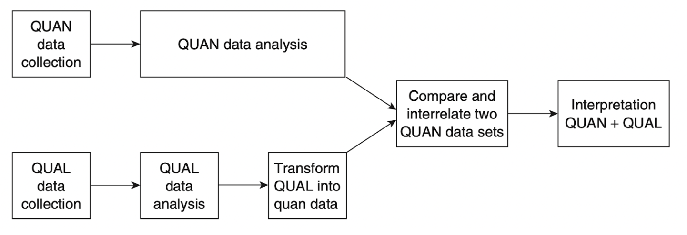
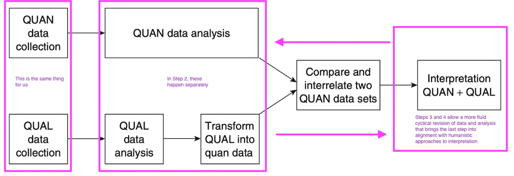

Setting the Stakes
At first glance, US historiography on the Spanish-Cuban-American War (1895-1898) may seem exhaustive. However, with some exceptions, most of what has been written has privileged US sources and perspectives on the war, focusing on the moment when the United States militarily intervened in the ongoing armed conflict between Spain and Cuba, and justified their actions as a fulfillment of their moral duty to help Cubans gain their independence.1
Perhaps not surprisingly, an in-depth analysis of sources and historiography from the three countries reveals a more complex history. Dating back to 1895, the US government knew that they lacked casus belli to intervene in the war between Cuba and Spain.2 From 1895 to 1897, the inaction of Presidents Cleveland and McKinley safeguarded the interests of US commercial interests in and with Cuba, as both worried about the economic consequences of retaliation from Spain on US interests. They preferred to compel Spain to reform its relationship with the island—by granting Cubans autonomy to rule their government under the control of Spain—rather than have a fully independent Cuba ruled by “uncivilized” multiracial insurgents that they, a “racially superior” and “civilized” US government and business community, did not want to deal with. These efforts by the US government were intensified when the Conservative prime minister of Spain was assassinated in August of 1897, and whose Liberal replacement, under much pressure from Washington, was amenable to offering autonomy to Cubans. Cuban insurgents in the island, many of whom participated in Cuba’s first war of independence (1868-1878) did not trust Spanish reformist offers and would not accept anything less than full independence. Meanwhile, wealthy, white Cuban exiles in the United States who feared losing their racial and economic privileges, also desired a change in Cuba’s relationship with Spain yet were uneasy about the possibilities of Black insurgents ruling Cuba. Since early 1897, these rich Cuban exiles had started to form their own organizations with the purpose of dominating the leadership positions of the Cuban Revolutionary Party in New York to contain the “social revolution” that had evolved in the island’s insurgent camps as well as in much of the party’s rank and file in the Unites States.
Cuban insurgency’s possibilities of winning the war increased after their May 1897 victory in Las Tunas and political turmoil in Spain in August 1897. By January of 1898, after Cuban insurgents had unequivocally repudiated Spain’s offer of autonomy, wealthy New York Cuban exile leaders pushed further and won control of the Cuban Revolutionary Party, which had been directing the war in the island from abroad. Wealthy Cuban leaders demanded that mostly reluctant insurgents in the island cooperate with the US military, especially after the (internal) explosion of the USS Maine in the Bay of Havana was blamed on Spain and used as a justification for US involvement in the war. These orders by the Cuban leadership in New York were initially repudiated by island insurgents when the US government called for a cease-fire (March 27, 1898), which then prompted the US Congress Joint Resolution (April 20, 1898) to clear the United States of any malevolent intentions toward the island and to respect Cuban independence—with some caveats. This turn of events paved the way for Cuban insurgents’ collaboration with the US military, and for the United States’ swift military landing in insurgent-controlled territory and their victory in the summer of 1898. And yet, at that critical moment, the cooperation of insurgents from the island was crucially obfuscated, as the US military and government excluded them from important surrender ceremonies, from taking positions of power, and even from participating in peace treaty negotiations. The change in control of the Cuban Revolutionary Party leadership in the US mainland, in addition to the heightened US media frenzy to get the US president to finally do something about Cuba, and the pressure by wealthy Cubans in the United States and American business interests on the US government to preclude a rule by Cuban insurgents once Spain was out of the island all contributed to the shaping of the US neocolonial relationship with Cuba in the twentieth century.3
Many US historians working on this war have focused on a portion of what had been a much longer conflict between Cuba and Spain that started in 1868 and which had direct consequences on the outcomes of the 1895-1898 war. Encapsulating the timing of the event to 1898 iterates not only the claim that the United States became an empire by accident—provoked by the sinking of the USS Maine—but also that, consequently, the country had to suddenly “learn” how to administrate overseas “territories” after 1898.4 As historian Gervasio Luis García asserts, “1898 does not explain 1898.”5 In addition, this kind of historiographical focus cemented the labeling of the event as the “Spanish-American War,” which erased Cubans as the protagonists in their own wars of independence.6 However, an empire does not just happen, nor did much of the US public suddenly accept, and rally behind the war without an established ideological framework within which actions by the US government and military could be deemed logical and justifiable to much of the citizenry.7
How are Empires—and Imperial Histories—Built?8
The framework of a justification that makes an empire’s actions meaningful to its subjects requires an imperial engine that manifests particular values of “good” and “bad” and that weaves those values into everyday life and into the one-on-one on-the-ground interactions between imperial agents and local inhabitants.9 Scholars concerned with the cultural workings of imperialism have approached the building of this imperial framework by exploring language and representation, and the meanings encrypted in both as key cogs in the empire-building machinery.10 The use of coded hierarchical discourses in texts and visual representations plays a role in justifying and naturalizing domination and, as such, informs and enables audiences to support actions that legitimize the power of ruling or aspiring political elites or groups.11 Although formal empires may be disappearing as political entities, the operationalization of discourse that encodes unequal power relationships and that justifies and normalizes dominion and the silencing of others whom the narrative dismisses as powerless and of lesser importance to a purportedly superior civilization transcends distances, territorial boundaries and established chronologies.
At the same time, those imperial meaning-making powers are often rendered invisible because coded meanings they rely on have been normalized and are taken for granted.12 This essay gets at latent and implicit norms that result from these meaning-making efforts using computational linguistic tools structured through the MMATCH methodology’s five steps. In the first part, we will address the historical problems informing this particular study by using the example of US war correspondents who interviewed and produced texts for US audiences centered around the life and character of General Máximo Gómez, a Cuban insurgent general during the Spanish-Cuban-American war. In the second part, we will address how the use of computational linguistic tools that offer insight into the words used to describe Gómez and the linguistic context of those words can facilitate the identification of both latent and explicit norms that helped build audience expectation in the historical context of the Cuban War of Independence.13 Therefore, and in tandem, this article, evaluates the value of MMATCH in assessing what are we to gain in the use of computational tools that we could not have achieved through more traditional close-reading, analog methods.
Representation, War Correspondents, and Empire-Making
Whether intentionally or not, people living amid an empire’s expansionist cultural project become participants in that project when they internalize the terms and representations that express and normalize a hierarchical and expansionist point of view.14 Paving the way for the cultural embedding of US expansionism in the nineteenth century were mass-produced consumer spectacles, dime-novels, newspapers, museum exhibits, and special events geared towards European-Americans. US entrepreneurs saw much commercial potential in the white, English-speaking, Christian-Protestant audiences for whom they catered entertainment that allowed spectators imagine themselves as a homogeneous “American” community.15 Spectacles like Bill Cody’s “Buffalo Bill’s Wild West” show presented the frontier as a mythic place whose history became one where fiction and reality coexisted. For the audience, the stories of the cowboy wars against Native Americans, and the fact that Cody had himself participated in those wars, granted authenticity to those stories while making palatable “the principle that violence and savage war were the necessary instruments of American progress” and “that the bullet is the pioneer of civilization.” Indeed, the frontier narrative trope/formula became an ideological archetype and precedent for the expansionist struggle against “savages” and “regressive races” by progressive imperialists such as Theodore Roosevelt.16 Similarly, other traveling spectacles such as P.T. Barnum’s “freak” show commodified the European-American fascination with “curiosities” as manifested by the display of people with physical deformities, many of whom were Black or mixed-race, as primitive and animal-like, which reaffirmed already the existing association between non-Western people and their non-human status.17 The 1893 Chicago World’s Columbian Exposition further built upon those ideas while showcasing “inferior others” and their alleged inability to enact “progress,” which cemented a sense of superiority among European-Americans as technological innovators, particularly in their ability to tame “nature” (meaning the land and the native people in it) to bring forth a land of abundance.18 Such mass-produced consumer spectacles, “as carriers or representations of memory and identity expressive of time, selfhood, and belonging” for European-Americans, became powerful vehicles through which imperial stereotypes about other cultures and expansionism were adapted, discussed, generated, propagated, and iterated.19
Indeed, what was published and performed in these kinds of shows at the time gave European-American audiences “a sense of ownership, entitlement and familiarity with respect to the distant parts of the world that were being explored, invaded, invested in, and colonized.” What was represented in many nineteenth-century publications, performances, and exhibitions, as cultural products, transmitted a common cultural identity to further generations. These cultural manifestations helped stabilized meaning in speech and language. And while these operate as mnemonic marks that help remember what makes a group of people belong to a culture, they, intentionally or not, endorse the forgetting of aspects that could pose a threat to their collective identity. Those nineteenth-century spectacles, events and texts, helped preserved a European-American cultural memory that both erased the violence enacted towards Native Americans, Mexicans and African Americans as they expanded to the US West, and legitimized European-Americans’ participation in “a planetary project.”20 In other words, cultural manifestations served, purposely or not, knowingly or unknowingly, to develop, debate, and spread ideas that would give meaning to representations about ‘others’ at the same time that those notions helped define the contours of European-American identity. Terms that describe “others,”; tropes, metaphors, and euphemisms that would covertly justify domination over other lands and their inhabitants became common currency. People would intuitively repeat them because the use of that language implied belonging to a “superior” group, all of which helped structure a shared consciousness of a collective identity.21
Members of expeditions, travelers, reporters have all been important historical agents of expansionism. Among all those, journalists—and, we would add, scholars—have been singled out for being “perhaps the most open, in that their raison d’ȇtre is to write, and so they leave records of their interpretations.”22 Moreover, journalists, especially nineteenth-century war correspondents, had the major task of instantly and constantly making comprehensible a foreign place and people to an audience thirsty to know about the world outside the US mainland. These correspondents became, as Peter Hulme would have it, “agents of transculturation,” because “they passed as interpreters of Cuban culture to a US readership.” Some agents of transculturation would, vested with the authority they automatically acquired as first-hand observers, undermine and sabotage the foreign people they wrote about, as “translation is often the means at hand to strike the blow.”23
For example, New York Herald reporter George Eugene Bryson translated an article written by Cuban intellectual José Martí hours before the latter was killed by the Spaniards on May 19, 1895 in Dos Ríos, Cuba. Philologist Luis Toledo Sande carefully compared what Martí wrote in Spanish and the translation Bryson published in English and found that only 63 percent of Martí’s text had a direct correspondence to what was published in English. The remaining 37 percent of the article that was silenced by the newspaper referred to Martí’s discussion about the maturity of the revolution, and the national unity and democratic spirit of the insurgency, all of which the Cuban leader mentioned in order to preempt US arguments justifying that they become mediators and guarantors of peace in the conflict. In addition to critical parts of the original text that were cut, others were distorted to create the illusion that Martí supported foreign exploitation of Cuba’s “hidden treasures.” Finally, Bryson’s replacement of Martí’s word “revolution” with the word “revolt” undermined the true nature of the war by Cuban insurgents.24 As Edward Said suggestively puts it: “What counts is not what people are or think but what they can be made to be and think.”25
The nature of the new journalism of the late 1890s fostered these representations of the Cuban war, the armed conflict in Cuba coinciding with the emergence of a new kind of reporting in which publishing was a business, and news a commodity. Telegraphy, along with railways and high-velocity presses, shortened distances and time in the dissemination of news. Use of half-tone in newsprint allowed photographic images to be printed for the first time in 1897.26 All this required capital, and marketing practices and labor policies were utilized to make news attractive and appealing to increasingly urban and educated US readers and buyers of newspapers. A reporter, for instance, would be paid based on “space” —half column, a full column, and so on—a practice that encouraged journalists to imaginatively pad stories with little concern for the truth, especially if their content complied with what editors wanted to publish. Sensational scoops or exclusive stories were rewarded with bonuses, a practice that prompted journalists to find news stories at any cost, and even to exaggerate or fabricate ones.27 Newspapers such as William Randolph Hearst’s New York Journal or Joseph Pulitzer’s New York World both spent enormous resources in their competition for readership: Hearst paid dearly for “stealing” Pulitzer staff for his paper, and, to keep his business afloat, Pulitzer disbursed personal funds to cover the great costs of cable service and even tugs to bypass Spanish censorship and deliver news promptly from Cuba.28 The economic imperatives of the publishing business required news that appealed in content and presentation, news that would make people want to pay to read it. Yet, at the same time, newspaper editors’ reliance on manufacturing news stories in a competitive publishing market inevitably led the American public to question the accuracy of the news stories they were reading. What was touted as big news one day would soon be contradicted or rendered less interesting in light of other even more sensational news the next. In the fog of information created by newspapers, many squinted to discern where “truth” lay.
Newspaper editors, aware of this concern, made veracity and accuracy part of their marketing. One journalistic tack at the time was to send intrepid newspapermen to find an important person abroad, deliver or gather “a message from or to the outside world,” or get exclusive interviews with enigmatic or interesting personalities. In these instances, the story of the bravery of the journalist traveling into unknown lands for the sake of accurate information would also be used to create excitement in anticipation of the actual news story. James Gordon Bennett, Jr., owner of the New York Herald, the newspaper choice of the wealthy and a pioneer in those kinds of journalistic adventures, was the first to send his reporters to Cuba for such a mission.29 After a failed initial attempt, Bennett, Jr. and his reporter, James O’Kelly, succeeded in 1873 in crossing into insurgent territory in eastern Cuba to meet with the leader of Cuba’s first war of independence, Carlos Manuel de Céspedes. From this adventure, O’Kelly published a series of articles for the Herald and, in 1874, a book entitled The Mambi-Land: or A_dventures of a Herald Correspondent in Cuba_.30
The successes of the exclusive first-hand stories of Bennett, Jr.’s war correspondent encouraged similar ones thereafter. Of particular interest were stories about Cuban insurgent generals—especially Máximo Gómez and Antonio Maceo—both respected military men whose fame dated back to Cuba’s first war of independence (1868-78) and to the subsequent smaller war that General Maceo fought in 1879-80.31 General Maceo was an intriguing personality to the US readership, a mulatto hero whose bravery and military talent won him a high rank in the insurgency as well as indisputably wide popular respect. And yet, while some correspondents interviewed General Maceo, he did not get as much limelight in the United States as Dominican-born General Máximo Gómez, who discerned the value in US reporters stirring up public interest in the war in Cuba. On the one hand, as his diary attests, General Gómez facilitated such encounters with the press; on the other, he was an enigmatic leader.
Born in 1836, General Gómez fought with the Spanish military in the Dominican Republic, which he left to move to Cuba once Spaniards were expelled from a politically independent Dominican Republic in 1865. He joined the Cuban insurgency when the first war of independence erupted in on October 10, 1868, and ascended to become one of the top military leaders.32 Well respected as a military strategist, General Gómez was known for waging war with limited equipment and trained soldiers—that is, a guerrilla war characterized by small groups of soldiers suddenly ambushing the Spanish military with machetes. He also acquired a name for his strategy of curtailing Spanish financial resources by burning the fields of anyone who did not support the revolution. His aim was for a long, irregular war that would drain Spain’s resources and lead Cubans to victory. [EMBED PICTURE OF GÓMEZ] 33
General Gómez was a disciplinarian. His (well-known) difficult temper did not admit of the smallest act of treason, which he penalized with the death penalty. All this made him the target of criticism, especially among the insurgency’s top leadership and among wealthy Cubans, who accused him of being an “uncivilized” military man, a caudillo (strongman), and a dictator. At different points in the two Wars of Independence, he was accused of participating in the peace agreement that ended the Ten Years War (1868-78). The Pact of Zanjón, as it was called, was signed and negotiated by white wealthy insurgent leaders, and was loathed by the rest of the insurgents because it did not solve the pressing issues of that first war: the abolition of slavery and political independence from Spain.34 During the second war (1895-1898), General Gómez was also blamed for not preventing José Martí’s killing in 1895. In a nutshell, “old man” Gómez’s unconventional, non-Western military tactics were feared by his enemies yet characterized as “uncivilized” while his well-known fits of temperament also provided pretext to some rebels who did not trust him as a leader for the Cuban insurgency, many times citing his status as a “foreigner.”
By the time the second war was under way in 1895, the strong competition for news made it imperative for US newspaper editors to send reporters to the interior of Cuba in search of “true accounts” of the insurgents. Indeed, in spring of 1896, three young war correspondents in their late twenties, with a rudimentary command of the Spanish language, crossed into insurgent territory in the eastern Cuban countryside to interview General Gómez.35 The first correspondent, Sylvester Scovel, motivated by the lack of direct reporting from the island, arrived in Cuba in October of 1895. He was initially hired by the New York Herald, but had moved to Joseph Pulitzer’s New York World by January of 1896. Since February of 1896, when Scovel sent his first articles to the World, the newspaper had anticipated and created suspense around Scovel’s reporting. He was featured as a brave and daring correspondent, one who “tells, not rumors, but what he sees,” and as one who seeks “authentic news of the Cuban patriots.” The correspondent possessed great qualities in the public imagination as an adventurer and as a transcultural agent, and Scovel fit the bill perfectly: “Mr. Scovel has shown that he combines all the great and high qualities of the war correspondent’s devotion to duty, accuracy, graphic descriptive power, absolute courage and skill both in getting the news and in sending it through the enemy’s lines to his newspaper.”36 In fact, his news stories were among the few whose authorship was acknowledged at the time.
The second correspondent who wrote about General Gómez was George Bronson Rea. He became a correspondent for the New York Herald after joining the US Navy and spending five years as an engineer modernizing sugar-producing machinery in US-owned plantations in Cuba. On January 18, 1896, he left Havana to join General Gómez’s army, which he did for nine months, with orders to send the newspaper “the exact truth” of the situation in Cuba.37 While Rea did write some news stories, it was his book Facts and Fakes About Cuba, published in 1897, that galvanized attention. The book blamed Cuban laborantes (Cuban insurgent sympathizers who sent stories supporting their cause to the US press) for the misinformation on the war in the United States, makes the point of showing untruthful reporting, and takes special aim at defaming General Gómez—all of which, incidentally, rendered a more positive view of the Spanish side of the war. The leitmotif of the book was General Gómez’s public insult to, and threat of, Rea for being a correspondent of a newspaper biased in favor of Spain, a situation that prompted the US journalist to reconsider his initial favorable opinion of the Cuban insurgency.
Finally, the New York Journal’s correspondent Grover Flint arrived in Cuba in March 1896 to spend four months reporting on General Gómez. During the time Flint was in Cuba, mainly in the provinces of Camagüey, Las Villas, and Matanzas, he was able to send only four dispatches from the field, sometimes illustrated with his own drawings. Yet it was his book, Marching with Gómez, published in1898, that gave Flint notoriety.38 According to his father-in-law, John Fiske, who wrote the introduction of the book, Flint was in Cuba, like Scovel and Rea,
with the purpose of obtaining correct information as to what was going on in the island. A brief stay at Havana was enough to assure him that the information received in that city was likely to be anything but correct. He therefore made up his mind to break away and visit the insurgents, in order to satisfy himself by ocular inspection as to the various points upon which he wished to be informed. Some experience of life on the Plains as a soldier in the United States army had prepared him for the kind of adventures involved in the undertaking…39
From the first pages on, the historical Spanish presence in this hemisphere is described as “odious” and in need of ending, and the Cuban insurgents’ cause is commended. Flint thus highlights the atrocities committed by the Spaniards, and describes General Gómez in a more positive light than Rea, even though the three of them—Flint, Rea and Scovel—frequently witnessed the same fights.
The news stories by Scovel and the books by Rea and Flint provide a unique opportunity to dig deeper into the ways these correspondents transculturally translated General Gómez, the insurgent leader, and the war situation in Cuba to US readers. What words did they use to talk about General Gómez, what meanings or sentiments were attached to those words, and what does this say about the different representations of Cuba addressed to a US readership? How did their stories seek to grab the public’s attention and what semiotic strategies did they use in their representations of Cuba to make their foreign reality intelligible to the American audience? And how does our positionality as modern scholars embedded in a different kind of empire shape our reading of these sources?
Grounding History in Method-Driven Approaches with MMATCH: An Overview of Mixed-Method Approaches to Collaborative History (MMATCH) as One Solution to the Epistemological Challenges of Digital History
At the beginning, I could not see the beauty of [computational text analysis]. I felt like it was in the theoretical stratosphere. But the practical reality is that, as a scholar, I can see [in the different visualizations it provides] what I’m thinking about grounded in the trends the data gives to me. At the same time, I also know that the data and the visualizations need to be curated and interpreted.
Arlene, in conversation
Our questions about the transcultural representation of Cuban generals like Gomez are anchored by our need as historians to understand the past, and equally unmoored by our inability to time travel. Instead, historians root the epistemology of our work—the how we “know” of history—in the space between our own positionality, the close reading of primary sources, and the expertise contained in the historiographic body of secondary sources in which we situate ourselves as scholars of our particular subfield.40 The suspension of a humanist between personal interpretation, source material, and external scholarly traditions anchors our production of scholarly knowledge in a shared scholarly tradition. Incorporating digital methods that adapt big-data analytics to understand the role of imperialism in the Cuban War of Independence, for instance, can seem to some scholars like the worst possible disruption. While digital humanities scholarship has acknowledged the need for hermeneutic critiques of digital-methods results for more than a decade, each new computational method revives a worry that the analysis spit out by a computer and published without question will overtake a need for human interpretation.41 Just as complicated are the questions raised by collaboration on large projects that stretch beyond the ability and knowledge of a single scholar. In other words, how do individual scholars bring their positionality to bear in a collaborative article that combines many positionalities and has the added complexity of non-traditional methods?42
To address these concerns, digital-humanities scholarship generally acknowledges the role of such hermeneutic traditions;43 indeed, the most recent platform for digital-history publication includes layers within original historical scholarship that let readers interact with digital-method driven argument as both hermeneutic and code.44 We take this one step further by formalizing the importance of interpretive dialogue—of conversation, with ourselves, our sources, and our methods—that is often informal and thus invisible in the formal production of historical scholarship. In part, that invisibility is a factor of the general lack of formal methods sections in historical scholarship. Some digital-humanities disciplines, like computational linguistics, are attached to scholarly traditions that require formal methods sections, in which both tool and collaboration processes are made visible. In history, formally articulated methods are less common; the ways in which historians work with digital methods, and in collaboration with each other, is often mysterious and somewhat suspect as a result of its mystery for historians less familiar with either digital methods or collaborative authorship practices.
MMATCH, or “Mixed-Method Approaches to Collaborative History”, is designed to bridge that gap. It eschews the formality and attendant exclusivity of individual hermeneutics, and the received “knowledge” of data. It also extends recent work that positions the documentation of digital methods as valuable practices that serve arguments about change over time, by offering a framework in which those methods can be made more visible and meaningful as methodological guides.45 In short, MMATCH acknowledges the roots of our scholarship in formal historiography, in methodological development, and in informal conversations with colleagues in such locations as hallways and around computer screens. By marking all of these spaces as formal sites of authorship, MMATCH both surfaces the unacknowledged silences historians gloss over in our emphasis on solo-author monographs and emphasizes the need to articulate methods within a historical argument, and therefore offer a transparent accounting of the nature and treatment of results drawn from digital tools or other historical methods not rooted in close-reading approaches.
MMATCH is comprised of five steps, which we will lay out first in terms broad enough to suit most mixed-method collaborative authorship teams and then more narrowly for our specific focus on the Cuban War of Independence:
- Sourcing: initial agreement on the boundaries of primary and secondary sources, on possible analytical paths, and on individual roles for each researcher.
- Parallel interpretation: separate scholarly analysis that addresses the individual positionality and methods specialties of each researcher in the collaboration.
- Dialogue-based triangulation: interstitial and informal negotiation that integrates the separate methods analyses and the historiographic conventions each researcher brings to the project.
- Revised parallel/joint interpretation: a cyclical round of formal and informal conversation that includes individual interpretation and potential methods changes resulting from the conversation in Step 3; Steps 3 and 4 may repeat several times and need not be done in isolation, as with Step 2. The analytical results of Steps 3 and 4 should be clearly documented either a separate methods section, or clearly labeled as mid-stage analysis in the case of a more traditional narrative structure.
- Formal written results: while this stage includes the narrative text that is generally thought of as constituting historical scholarship, it should also include a methods section that documents how the authorship team structured steps 1-4. The methods section may also identify a particular mode of audience engagement (static reception, interactive exploration of capta, hybrid) that is identified in Steps 3 and 4 particularly.
Related methodological models help position the MMATCH approach as building on, as well as new to, both humanities and social-science versions of the historical method. On the humanities side, which privileges the interpretation of an individual, several practices align with MMATCH. Johanna Drucker’s concept of capta suggests that humanities “data” requires interpretive intervention—a form of analysis itself—prior to being subjected to computational analysis. Data, Drucker says, is given to the researcher as a whole, complete set of prefabricated information that can be analyzed with minimal transformation. Capta is captured, quite literally taken by a researcher from unstructured evidence and transformed into structured information through a process of humanistic interpretation.46 In the MMATCH model, capta offers input into a computational black box, a computational tool or algorithm that is opaque and hard to understand. Capta helps lessen the impact of that computational black box because the process of capta interpretation makes the data going into the black box more understandable and transparent.
On the output side of the historian’s interaction with the computational black box is what Jo Guldi describes as “critical searching,” in which the individual historian performs a critical reading of computational outputs as though the results are themselves a source. MMATCH offers an explicit framework in which scholars can articulate how closely aligned their treatment of the results are with the close-reading of primary sources. In both cases, capta and the mechanism of critical search necessitate a critique of the entire historical method, including the digital tools and the results such tools provide.47
The MMATCH framework extends this methods-critique model and makes the critical apparatus in non-traditional history transparent by positioning the humanities scholar as an interlocutor for the computational methods. However, neither capta nor critical-search approaches address the fact that individual interpretation can circumscribe collaborative efforts. MMATCH also closes that gap by bringing the formal historiographic conversation and informal seminar discussion together in service of collaborative capta and critical interpretation of computational models.

IMAGE CAPTION: Creswell, J. W., & Plano Clark, V. L. (2011). Choosing a mixed-methods design. Designing and conducting mixed-methods research, 2, 53-106. Creswell notes a 2003 article by Tashakkori and Teddlie that identifies parallel structures for triangulation between qualitative and quantitative, but in which one or the other is primary, they happen in parallel, and are not iterative.
The need for reproducible results and validation in the social sciences necessitates the articulation of well-documented collaborative mixed-methods approaches that blend quantitative and qualitative approaches to research.48Triangulation Design is a good starting point for digital-history collaborative methods, but it stops short of the historical method in two ways. First, Triangulation Design generally assumes that data for quantitative and qualitative methods will be different and that one of the methods will take priority. Historians work holistically with primary- and secondary-source collections that can be prepared differently (capta) but which are ultimately drawn from the same evidentiary base and place similar weight on qualitative and quantitative methods. Second, Triangulation assumes that the articulation of a method will result in reproducible empirical results, an assumption that directly challenges the idea of historical interpretation as shaped by positionality of the author and therefore unique to each historian. 49

MMATCH addresses both of these by documenting the value of informal discussions that often contribute meaningfully to the development of historical scholarship but are dismissed as “conversations” that cannot be cited and whose effect on authorship is minimal. MMATCH instead positions the conference-hallway conversation, and conversations similar to it, as the primary site of both capta collection and analysis. It builds a collaborative positionality among the specific authors of a piece of historical analysis while still offering a transparent, repeatable process even if the results aren’t necessarily empirically reproducible. The epistemological stakes of this approach, then, are threefold:
- It offers an epistemologically sound solution to scholars interested in a digital-methods approach to their research question but for whom the method is a serious barrier to entry.
- It models a fair, equitable research-collaboration practice for traditionally single-author disciplines by
- extending the literature on individual interpretation and hermeneutics to a collaborative model based in existing historical-methods practices, and
- expanding access to the world of scholarly production to anyone with a voice in these informal scholarly conversations.
- It offers a model for discipline-wide development of a formal literature in historical methods, which values the development, articulation, and presentation50 of new methods; the communication of those new methods to practitioners with a range of interest in those new methods; and the centrality of collaborative hermeneutics.
By interpolating our conversations and computational text analysis in MMATCH, we simultaneously offer an interpretive view of historical data while also changing our interpretive lens. That change is necessary so that we can better understand our own present-day positionality and how that present-day context shapes our ability or inability to engage with the historical perspectives of our subjects. These choices acknowledge our individual centers of expertise and, in encouraging a collaborative process that makes the translational leap from computational model to close-read historical analysis, hit a middle ground between computational analysis hermeneutics that shape the historiographic conversation and its contributors. We hope ultimately that MMATCH will make it easier to facilitate the training of interdisciplinary and inter-specialty historians and provide a collaborative approach to the writing of methods-driven history.
MMATCH in Integrating Computational and Close-Reading Histories of the Cuban War of Independence
We developed MMATCH to scaffold a general process that suited both our mixed-methods history collaborations and other new-methods collaborations of many kinds. In turn, MMATCH helped us tell a complex story about Cuba and its people as they are represented by war correspondents of the late 1890s. The triangulation in Steps 3 and 4, between our digital-methods approach (outlined below), our close-reading approach (above), and the historiographic structures around cultural mnemonics exposed a potential gap in how we wanted to understand our sources and what we were capable of understanding in our sources as outsiders to the cultural norms of 1895 US print media. Our computational analysis exposed several latent patterns about women in the Cuban insurgency in our sources that we didn’t understand. Subsequent close-reading analysis helped us connect additional secondary literature and primary sources and historiographic analysis helped us connect those latent patterns about women to the feminization, and subsequent diminishment, of Cuban rebels as capable of self-rule.
Step 1: Sourcing, Periodization, and Corpus Building
MMATCH enabled a guided computational reading that helped us step back from the imperialist language in which we are enmeshed as US citizens and treat that same computational analysis as a quasi-primary source that could be interpreted alongside our primary sources. For this first step, we agreed on our three main sources—news stories by Scovel, 1896-1898, and the books by Rea (1897) and Flint (1898). To make these texts capable of being digitally analyzed, we transformed into searchable text files. This means they would need be scanned into images, its characters, text, recognized by an Optical Character Recognition (OCR) program, cleaned from extraneous characters and repetitive titles on the top of every page, and then saved as text files. This job was facilitated by the fact that these nineteenth-century publications are readily digitized and text files available in digital libraries such as HathiTrust. We benefitted from the transcriptions of many of Scovel’s 1898 news stories done by Darien Elizabeth Andreu, which we processed into searchable text files, one for each article. To that collection we added other articles by Scovel extracted from microfilm and digital newspaper libraries.51 Finally, the longer books written by Rea and Flint were divided into files by chapter to facilitate the use of parallel computational text analysis and close-reading analysis.
Step 2: Parallel Computational and Close-Reading Analysis
Our close-reading analysis depended in part on a fairly traditional historiography (above), but it also derives from a “flyover” of the latent trends in the corpus. We were aided in this by topic modeling, a “bucket-of-words” approach which enabled us to understand how different words and concepts are distributed (equally and unequally) throughout the works of our three journalists, both individually and as a whole.52 Topic modeling examines how words occur and co-occur with each other within the context of discrete sections (“chunks” like chapters from a book) in a larger collection of text (a “corpus” comprised of 500 chapters from 5 different books). Ted Underwood offers a very thorough and understandable explanation of topic modeling’s bucket-of-words approach, which we summarize here:
1. Perform an initial, random, distribution of words in the original text to serve as a starting point. a. Choose a number of topics, or “buckets” appropriate to the size of your corpus (our “coherence models,” below, suggested we needed between 7 and 10 buckets) b. Starting with a random word in a random chunk, drop that word into one of the buckets. c. Randomly distribute every word in the corpus into a random bucket.
- Use the random distribution of words into topics as a platform to compare word co-occurrence in the original text with word co-occurrence in the newly-created topics. Starting with a random word in one of the random topics, a. Identify words that co-occur with the starting word, first in the context of the original chunks in the corpus (e.g. if the word currently being analyzed is “she”, what other words appear in a chapter that also contains the word “she”). b. Identify words that co-occur in the topic that starting word was drawn from.
c. If there is a topic that matches the original-chunk starting-word co-occurrences better, move the starting word to that topic. If not, leave it in the original topic. d. Repeat this distribution comparison for every word in the corpus several hundred times to refine the topics. e. Return a list of topics and display 10 or 20 of the words that appear most frequently in both that topic and in the corpus for the reader.
MMATCH and its emphasis on positionality and transparency also helped us choose an appropriate topic-modeling tool from the many topic modelers that are available. We wanted our model to be accessible to other scholars with less technical skill, which meant we needed to treat our topic model results not as statistically valid but as an exploratory framework laid over our primary sources. In conversations about how we would use topic models leading up to our Step 2 analysis, we found ourselves talking about the topic models as though they were a hybrid source that sat somewhere between primary source and secondary source. A number of scholarly works insist on the critical and/or hermeneutic treatment of digital-methods results, rather than reducing the model to the statistical significance of words co-occuring in a topic together.53 We found, however, that none of the existing literature makes a direct parallel between the primary sources and the digital analysis of primary sources as sitting in the interstitial space between primary and secondary source. Because MMATCH shaped our initial sourcing and methods conversations, we surfaced this parallel between primary source and topic model result early in our planning process and used the flexibility that treatment of the topic model gave us as we integrated historiography with our digital methods results.
Our choice to treat the topic model as a primary source, then, meant that precision mattered slightly less than if we were accepting the topic-model results as the primary, or statistically valid, focus of our analysis. We chose to use LSI (Latent Semantic Indexing), a less “precise” topic-modeling algorithm that tends to overlook differences between chunks more readily than other algorithms. 54 Its advantage is that is supported in an easy-to-use point-and-click cloud-based interface that is more accessible to other researchers seeking to model their work on ours.55 The balance between distributional precision and ease of use also supported ease of sharing our actual code. We made minimal adaptations to a pre-scripted LSI notebook available in Google Collab’s cloud-based platform, so that other historians can draw on our methodological approach in both the computational and conversational realms.56
To responsibly address some of the clear algorithmic drawbacks of LSI, we used coherence models to help shape how we sectioned and re-sectioned our corpus. A coherence model offers a measurable way to determine how many topics a historian should request from a topic model run on a specific corpus to produce topics that are sufficiently divergent from each other. Divergence between topics matters because, if the same similar words and word clusters appear in many of the topic models in a topic, it will be difficult for a human reader to quickly differentiate between the contents of each topic. A coherence model, run first on all of the authors together and then individually for each author’s work, suggested that our all-correspondent corpus would benefit from between 15 and 20 topics and our individual-correspondent corpora could support 7 to 10 topics.
Finally, we also established a need for visualization in our Step-1 boundary-and-need conversation, for two reasons. First, we wanted both textual and visual methods to identify latent patterns in the primary-source language. Second, we wanted a point-and-click interface that facilitated the communication of results to historians who want to understand our methods but not replicate them. LSI run in the Google Collab environment supported the inclusion of accompanying visualizations of the topic models using a library called “Gensim”, which offers several visualizations of the word-cluster differences and overlaps between each of the topics (described below).
The final LSI results are a set of topics that:
1. Displays words that co-occur in a single chunk regularly. Clicking on a topic shows the number of times a word contributes to that topic. 2. Visually indicates how much overlap there is between the different topics on an x-y graph. Topics made up of many words in the corpus are larger, and topics that have some overlaps in vocabulary are visually overlapped on the graph. 3. Specifies which chunks are best represented in each topic.
Because many words appear several times across the original text in a corpus, those words might appear in several topics. For example, machete co-occurs with a wide variety of other words in several chunks in our corpus, so “machete” appears in several topics as a result. (7, #10, EMBED TOPIC MODEL)
“It’s More Meaningful to Do This Together”: A Collaborative Analysis of Cuba from the Perspective of Three War Correspondents
Steps 3 & 4: Digital Analysis, Historical Context, and Research Revision: A Dialogue-Based Triangulation
In our parallel-analysis phase, Kalani focused on the historical trends in the corpus with basic knowledge of the historical content, and Arlene, who is a historical content expert, focused on a selection of the primary sources. When that parallel analysis completed, we set aside several scheduled blocks of time over the course of two days to make room for the sort of wide-ranging fluid conversation that happens in history seminars. Normally these informal conversations would sit in an interstitial space between stages of formal analysis; to facilitate formal record keeping without interrupting the informal flow of conversation, we recorded our meetings and then returned to the transcripts to identify questions and patterns that required additional research.57 [EMBEDDED SAMPLE VIDEO–Arlene and Kalani, conversation and triangulation video.]
Among those considerations were our data-cleaning treatment, including our choice of stop words (words that the computational analysis should ignore) such as articles (a, the, in, on, etc.) and the necessity of handling ambiguities of language that are easy for humans to manage but difficult for computers. For instance, we identified a need to normalize Hernández and Hernandes to Hernandez to acknowledge the Spanish-language provenance of the names as well as to fix variabilities in spelling. We made a different choice for issues of inconsistent diacritical marks, this time removing the diacritical marks in predominantly English texts for practical computational reasons. All these choices were based on our triangulation of close-reading and computational distributional analysis. Finally, our conversations as we negotiated the first round of our topic-model and close-reading individual results also helped us identify a need for corpus-linguistics analysis using AntConc. Where topic modeling focuses on words that co-occur in a large chunk of text, corpus-linguistics tools like AntConc are focused on sentence- and phrase-level word co-occurrence, so we were able explore all of the occurrences of a particular word, and words within 5 words of our search word, in their original primary-source context. That in turn connected the flyover topic-model view of our primary sources with the close-reading approach, so that we could scope additional close-reading passages, as well as areas of agreement or disagreement that resulted from our respective individual methods-treatment of the war correspondents’ corpora.
One of the topics identified in our topic modeling for the Flint-only corpus the Flint-only corpus is instructive in both the historical argument we offer here as well as in how MMATCH makes our analysis in Steps 3 and 4 more transparent. In these models, Kalani noted a topic (#7) that depended heavily on the feminine pronouns “she” and “her.” Arlene initially flagged these as references to the USS Maine, the ship that sank in February 1898 and was used to frame the narratives about 1896 and 1897 presented by Flint, for whom the sinking of the USS Maine introduces his entire text. We went back to the primary source texts using AntConc, and the first occurrence of the feminine pronouns we came across was a reference to the wife of a Cuban doctor who traveled with General Gómez and his troops.58 The difference between Kalani’s assumptions about “she” and Arlene’s assumptions about “she” suggested the necessity for further exploration. Using co-occurrence pattern searches in AntConc, we found three separate patterns for “she” and “her.” Two of the three patterns tied the idea of female-gendered pronouns to things or concepts. One was in fact the USS Maine, as Arlene had originally assumed, though this represented a smaller percentage of the total mentions than either of us had expected.59 The second pattern was comprised of references to “she” and “her” that characterized Cuba as a woman.60
The remaining pattern cohered around the women who travelled with Gómez’s army, including Dr. Hernández’s wife. This third latent pattern connected the she/her references from topic #7 to a word that appeared in several topics not limited to the “she” and “her” topic: the machete. In our initial close-reading analysis of “she” and “her,” we noted mention of an Amazon wielding a machete.61 In the flyover view of Flint’s corpus, machete-wielding wasn’t solely limited to the world of women warriors, but it did overlap. The combination of Cuba represented as a woman, and the Cuban insurgency as having women and men in its ranks, both wielding the same weapon, sent us down a path of exploration centered around the machete.
VIDEO WALKTHROUGH OF THIS EMBED WITH THE FOCUS ON ALL TOPICS PLUS THE SHE/HER TOPIC, AND THEN AN ANTCONC TREATMENT
While it might seem out of context to apply the term “clickbait” to the era we are talking about, the concept itself is very apt. References to women traveling with the army—and particularly Amazonian women carrying machetes—added a feminized dimension to one of the other topics that caught our attention in the first round of topic models generated by a corpus of all three authors, one that characterized Cuban insurgents as “little men with machetes.”[3.6] Both male and female insurgents, whether laypersons or leaders, were associated with machetes in our topic model, highlighting an overlap that keyed us into a feminization angle of the uncivilized trope that we hadn’t previously considered. The “she/her” topic was connected through the word “machete” to several topics that marked “machete” as part of the implicit narrative of Cuba’s insurgency as underdeveloped and incapable of self-governance. Machetes were coded as agricultural tools, suited for marching through overgrown territory, and Cuba itself was better served by agricultural tools that could also be wielded by women, rather than modern weapons designed specifically for men and men at war.
Flint’s outlier female pronoun topic pushed us to dig deeper into the three texts and ask several crucial questions: Is Flint’s trope about Amazons a vehicle to draw attention to and align his text with an expansionist narrative more familiar to US readers? If so, how did each author represent the Cuban insurgent organization and leadership? And what, if any, parallels did those descriptions have to the gendered depiction of the war in Cuba?
With those questions in mind, we searched “Gómez” in AntConc, a term/name present in all the topics for Flint, a war correspondent who had taken great pains to understand and justify General Gómez’s character and war strategies. For instance, Flint validated Gómez’s stormy temperament as one facet of a general’s need to discipline his army, especially one whose large number of Black soldiers, many of whom had until recently been slaves, were assumed to lack order and morale:
It is not usual, in armies, for a commander to publicly reprimand officers, even non-commissioned officers. It is supposed to destroy the authority of their rank; but Gómez, I think, did so for a purpose. He was surrounded by men unused to weighing points of honor with nicety. Though well meaning, they were ignorant of many things, and these lectures, generalizing on what a man owed to himself and to the fatherland, gave them new ideas. Gómez’ sayings were widely repeated, and the moral tone of the army was raised.62
Yet, while Flint explained and praised the character of the general here, he also undermined him elsewhere by repeating the adjective “little” when referring to Gómez and his weapon, incidentally another topic [Topic 7] of his book:
INDENT He is a gray little man. His clothes do not fit well, and, perhaps, if you saw it in a photograph, his figure might seem old and ordinary. But the moment he turns his keen eyes on you, they strike like a blow from the shoulder. You feel the will, the fearlessness, and the experience of men that is in those eyes, and their owner becomes a giant before you…
…He is a farmer by birth, the son of a farmer, with an Anglo-Saxon tenacity of purpose, and a sense of honor as clean and true as the blade of his little Santo Domingo machete.
…his little curved Santo Domingo machete. 63 UNINDENT
Flint’s narrative effectively emasculates the general even when explaining the reasoning behind his behavior in the context of the war. Gómez becomes a giant with a purpose yet his “little machete” from Santo Domingo—synonymous with Black “savagery” in the Western World—can be interpreted as weak because curved—not manly enough to defend the land, the women, from Spanish cruelty and barbarism.64 Flint’s repetitious description of the General’s weapon is further emphasized by a drawing he made of it (EMBED MACHETE DRAWING BY FLINT). Whether unconscious or not, in Flint’s text, the European sword as a referent to which he could compare Gómez’s machete, an agricultural tool and war weapon whose Spanish name is possibly derived from the word “macho” [male].65 Even though it was about 34 inches long, Flint repeatedly presents the weapon as small. A sword symbolizes authority, power, protection, strength, courage, and, metaphysically, the “penetrating power of the intellect”: a phallic symbol.66 By minimizing Gómez’s weapon, Flint is exemplifying what Anne McClintock points to as the “persistent gendering of the imperial unknown”; as “European men crossed the dangerous thresholds of their known worlds, they ritualistically feminized borders and boundaries.”67 In this case, by diminishing Gómez’s manliness and feminizing the insurgency, Flint’s narrative extols the role of powerful, aggressive women—the Amazons of Classical Mythology—as the true heroes of the war, a familiar trope in the Western world that Flint’s readers would recognize.68
The image of near-Amazonian women traveling with their spouses and wielding machetes for the good of their country is also indicative of another train of late 1890s “clickbait” that Flint had internalized even though he was considered a more reliable narrator in the eyes of Cuban insurgents themselves (see below). Flint’s Amazon trope reflects a thread of 1896 news stories about Amazons and other women in Cuba which enjoyed a moment of popularity designed to redirect flagging US readers’ attention to the war.69 On the one hand, Flint was one of several widely read journalists to address reports of women who followed troops and fought alongside men, a view that contrasted with other news stories aimed at raising sympathy for helpless women being mistreated in the field. On the other hand, Flint’s assignment in Cuba did not have the level of success his boss William Randolph Hearst expected. Flint’s news stories were not received regularly enough in New York to maintain reader engagement and suspense, and, in addition, his reports about the insurgents lacked the colorful exotism expected by the New York Journal.70 One likely possibility then is that Hearst’ editors used the Amazon trope to sell Flint’s narrative71 This possibility was considered by his fellow war correspondent Rea who noted in his book that the Amazon trope was imposed on Flint’s work without further explanation7273 General Gómez’s troops as bands of savage warriors in need of the civilizing force of imperial expansion also resonated with the recent US settler colonization of the Native American and Mexican people and their lands in the American west that Flint himself had been part of. Many Cuban women advanced the rebel cause as fighters, nurses, and spies inside the insurgency—they were called mambisas7475
Rea’s text provided a telling contrast to Flint’s and helps explain how gendered narratives of Amazon women and the narrative of the uncivilized Cuban insurgent served similar purposes. Initially, Rea’s narrative is set to address the “Facts and Fakes” in the US press about the war in Cuba, yet words related to news stories—correspondents, articles, publications—are barely part of the topic-modeling analysis [Topic Models 0, and [LSI Model Seaborn] Topics 1 and 5]. The stories on phony Amazon women some of those Rea criticized, as are the contradictory reports on how General Maceo was killed in December of 1896. However, the topic modeling reveals other themes that go beyond an assessment of the information being published about Cuba and, in those, the words “Gómez,” “Spaniards,” “Cuban,” “Maceo,” and “fight” are featured at the top of the most common topics. Rea focused on telling an insider story of an insurgent leader widely published in the US media, whose main culprit is a leader he vilifies as being “Black” and driven by emotion:
At last I would have the exceptional privilege of seeing and conversing with this somewhat mysterious personage so much talked about and so seldom visible… So this is Gómez! All my preconceived ideas of the man were shattered by a glance, for instead of the martial-looking old gentleman, whose bearing conveyed the idea of a thorough soldier, I found a chocolate-colored, withered old man, who gave one the idea of a resurrected Egyptian mummy, with the face lighted up by a pair of blurry, cold, expressionless gray eyes, that at times glowed like two red coals of fire, especially when in rage or passion.76
Rea was determined to tell a “truth” that not even General Gómez wanted made known: that the real tactics of the ‘renowned’ leader were “…nothing more or less than a game of hide-and-seek in the forests” to avoid direct fighting; that “heavy skirmishes… have been misnamed battles”; that their machetes were ineffective as weapons, that Gómez held Americans in contempt, and that Gómez’s aides would lie rather than attempt to contradict him.77 A more granular exploration using AntConc reveals that when Rea wrote about Gómez, he stressed the general’s personality traits: his “vile temper,” being a fibber, tantrums, authoritarian ways, unruliness, cruelty, violence—all of which aligned with his declared his lack of respect for the Cuban leader. All these attributes positioned Gómez as a person easily overtaken by emotional rages, not a civilized, rational man: “There was fire in the old man’s eyes…a storm was brewing.”78 More than a book on the “fakes” of news reporting, Rea presented the American public with “facts” that scorned and discredited Gómez. The storyline made Gómez the embodiment of all the dominant negative representations of Spain, thereby disqualifying the general as a civilized leader capable of ruling a country.
By making Gómez the backward, cruel barbarian with a lack of emotional control, Rea rendered a favorable image of the Spanish government and an unfavorable image of the Cuban revolutionaries. In fact, as a unique source of validation and redemption for Spain, a shortened version of Rea’s book was published in Spanish in 1898 as La verdad sobre la guerra. Revelaciones de un periodista yankee / _The Truth about the War: Revelations of a Yankee Journalis_t, an abridged version that did not include controversial passages about the Spanish government and military.
In contrast to Flint, Rea stressed the wide array of weapons held by the insurgents. However, his descriptions emphasized lazy and indolent soldiers, many carrying a machete and, if not, serviceable rifles, “revolvers and shot-guns of every conceivable make and pattern,” and blunderbusses. Rea’s narrative explicitly interchanged the word sword and machete: “the ‘machete’ is the sword of the Cuban soldiers,” “sword in hand and the sword is the dreadful machete.”79 Yet all weapons—whether modern or old-fashioned—were understood to be useless because insurgents lacked bravery; they insistently preferred to dodge direct confrontation with the enemy, as indicated by the context in which Rea used the word fight.
In this setting, Rea’ chapter on women in the Cuban forces started by asserting the presence of Amazons:
At first no one believed, who had not seen them, that there were women in the Cuban army; but there is no doubt about it. They are not at all miscalled Amazons, for they are war-like women, and do not shun fighting, the difficulty in employing them being that they are insanely brave. When they ride into battle, they become exalted, and are dangerous creatures.80
Clearly using the Amazon clickbait, Rea moved back and forth about the veracity of women soldiers in the Cuban army. He stated that while the generals opposed the presence of women on the march, he found two: one, the wife of Dr. Hernández, who assisted him with the wounded, and a young Black woman who was following her lover and “carried a machete and a small nickel-plated Remington carbine.”81 Yet, a few pages later, Rea, denied the presence of Amazons altogether as an exaggeration.82 He praised both wealthy and humble cubanas as modest people who had made many sacrifices and undergone many hardships, who would only be the victims of calumny if they mingled “freely with the most vile and brutal elements”—that is, the insurgent soldiers. Alternating between affirmation and denial, Rea establishes for the reader that Cuban men are useless, lazy and cowards, while Cuban women were the ones to be praised. “Cuba,” was semantically feminized, and because its men could not protect her, Rea undergirded the imperial corollary that Cuba must be protected by a civilized male.
By comparison, the topic modelling of Scovel’s articles reflects a disjointed text with little overlap in its topics. [IMAGE] While we expected this might be the case, because the work he did on Gómez was largely communicated via news stories rather than in a book like Flint’s or Rea’s, we nonetheless chose to proceed for one key reason. Scovel’s close relationship with General Gómez gave us the opportunity to explore his topical overlaps with Flint and Rea. Scovel’s corpora consisted of 104 news articles, 89 of which dated from 1898; consequently, most of them dealt with the explosion of the USS Maine. The word “Cuban” appears at the top of most of Scovel’s topics and is more frequent than the name “Gómez,” which is featured only in Topics 1 and 4. The frequency of the occurrence of the word “Cuba” muddied our interpretation of Cuba’s importance along different topical lines, so we turned to dispersion measurement in AntConc of the word “Cubans,” seeking out Scovel’s version of the people of Cuba rather than the land itself. We found that “Cubans” was especially important in pre-1898 articles. Of 13 articles in the dispersion measurement higher than 0, only four came from 1898: two from January, one from February and one from March. Gómez, interestingly, disappears from Scovel’s articles after early February of 1898, or, in other words, once the US government started to address the Cuban issue directly. After the sinking of the USS Maine, Scovel’s mentions of Gómez ceased.
The dispersion analysis in AntConc narrowed our initial close-reading scope to Scovel’s articles from 1896 to early 1898, in which Cuban people are represented as lazy, and insurgents are consistently cowardly: “Dodging tactics of the Cubans: the Cuban policy is not to fight. They are winning this war by running away.” “The Cubans have always lived high without really working; the revolutionists have gained less in military organization, discipline, and drill than in any other important respect…they are mostly unorganized…” “…These men count for nothing as soldiers.”83 The machete, the “sword-knife” is especially handy “if the father doesn’t like to work hard” for he can effortlessly cut a bunch of bananas to feed the family and, even if the insurgents are “not naturally brave” their skill with the machete allows them to scare Spanish officers. Women are capable of using modern sewing machines while men use ancient plows for agriculture yet women smoke a lot, as do their own children [scandalous image for the American reader]. In Scovel’s texts, Cubans are consistently depicted as backward, savage and incapable; men are pitiful while women are the only figures with some potentially positive civilizing attributes.
Scovel’s representations of his dear friend, General Gómez, are framed within the context of one-on-one interviews in the interior of Cuba as if to stress its “veracity.” For example, in his interview of December 23, 1897, Gómez, one of the highest general of the Cuban insurgency, is presented seated “in his hammock as usual.” Scovel primes the audience to see Gómez as someone closer to nature than to reason, with his description of Gómez’ emotional state and body language: “the fiery old General’s eyes blazed.” Furthermore, the content of the article attached to the figure of Gómez some policies that would raise the brows of readers from ‘civilized’ North America: the [barbaric] policy of hanging bribers, and the [unprogressive] prohibition of the grinding of sugar. All of which frames the last full column of the piece by suggesting that the armed conflict would end up as a war between Spain and the United States. By implication, the sub-text of the piece is that the indolent Cuban insurgency is incapable of winning by its own merits without the ‘help’ of the United States. Scovel’s news stories about the war in Cuba depicted General Gómez and the insurgency closer to a ‘weak’ and ‘dependent’ feminine sphere than to a ‘civilized’ masculine one.
At this point in our analysis, we turned to the work of Paul Kramer, whose emphasis on moving outside the realm of imperial narratives guided us as we considered how best to offer a Cuban perspective on the US point of view that Rea, Scovel, and Flint brought to the table. By focusing on US war correspondents’ representations of the Cuban war, we addressed imperial impulses that stripped Cuban insurgents of military organization, but we also wanted to embed those impulses in a view shaped by Cubans themselves. The diaries of General Máximo Gómez and his chief-of-staff, General Bernabé Boza, offered a corrective to the “danger of one-way thinking” that Paul Kramer cautions against, and our addition of these diaries also highlights the value of MMATCH in collaborative digital humanities projects. Rather than treating the topic modeling as a standalone data set that could not be modified in order to provide strictly reproducible computational linguistics results, we focused on a systematic version of what Jo Guldi calls the “ambling, iterative course of exploration” that constitutes history evidence gathering. 84 The nuances in meaning and pattern that Gómez and Boza’s Spanish-language diaries contribute to our currently-English-only corpus were directly inspired by to the results-and-revision feedback loop in MMATCH Step 4, which not only enriched our analyses but helped keep us accountable and grounded in both historiography and primary-source analysis. The multilingual approach was an additional challenge we had not initially considered, but because we had already treated the English sources both as a group and individually, we agreed to use the same approach, assessing Boza and Gómez together to provide a Cuban perspective and then separately to explore the latent patterns in each Spanish source.
General Gómez’s diary topic modeling surprised us in some ways. Even though both Gómez and Boza were narrating their day-to-day experience of war in the interior of Cuba, Gómez’s narrative stressed first-person pronouns and possessives in Spanish—yo, mi, me—in every single topic, signaling the importance he placed on his own role in driving the war forward. War, too, is emblematic of the repetitive topics on which Gómez focused on. From marches and enemies to war and encampment, he was acutely aware of his positionality as a future father of the Cuban homeland and therefore the needed to memorialize his actions as a leader. This subtext in Gómez’s diary is hinted at in the idealistic ways he wrote about Cuba, as a place and people who fought for freedom with great pain, sadness, heroism, and, sacrifice. These expressions were enunciated at key moments, for instance, in 1892, when the Cuban Revolutionary Party was founded by José Martí in New York, and in August of 1898, when the war ended.85 **Interestingly, Martí, who died in May 1895, is widely praised by Gómez in his diary—at least after 1892—while General Antonio Maceo, who is a minor topic in Gómez’s text, is more criticized.86 Especially at the beginning of the war in 1895, Gómez’s wrote about disagreements with Maceo, who supported a government that restrict the military less. These expressions of disagreement faded in the diary as the war progressed, while a sentiment of sacrifice and heroism permeated his narrative, especially when writing about killing traitors, waging a war with few resources, and fighting selflessly for the Cubans.
This contrasted with the diary of Bernabé Boza, itself different from Rea’s portrayal of a laid-back insurgent army, and much in keeping with Flint’s militarized presentation of Gómez’s army. Boza’s language centered on military hierarchy and government: army, war, government, operations, council, orders, coronel, barracks, military, encampment. Boza’s account left no doubt about the existence of an organized Cuban Republic government with a hierarchical line of command, something that is difficult to grasp from Gómez, Rea, and even Scovel.
Furthermore, and contrary to the three American journalists accounts, women were barely mentioned in both Boza and Gómez’ texts. Women made it to the two Cuban diaries to emphasize Spain’s inhumanity when they indiscriminately killed women and children, or as companion to men but rarely on their own right. The machete, on the other hand, was ever present in the Cuban’s account. The machete was a tool that facilitated life in Cuba’s wild interior, a weapon key to their fight and symbol in their war cry “al machete!” And while Flint, Rea and Scovel mentioned the machete in those facets, they also embedded other semantic meanings that reinscribed the insurrectionists weapon of war as less important, barbaric, backward, and savage: an arm used by “little men” that are insignificant to the Western ‘civilized’ world.
Boza’s diary was rich in details about the daily happenings in General Gómez’s camp, including the war correspondents who visited. He described Flint as el inteligente Yankee [the smart Yankee] whose work, “although it contain[ed] some lies and misjudgments as is common in any work,” was “the most impartial and exact [of the work by] war correspondents in the Cuban countryside.”87 Boza described Flint and Scovel as “honest journalists” to whom “Cuba will always be thankful for the justice with which they treated the independence cause.”88 He goes on to describe Rea’s work as dishonest, a criticism likely grounded in that journalist’s unapologetic attitude towards Gómez. Still, many of Rea’s observations about insurgent weaponry and lack of ammunition and resources, as well as about fake reporting by American sources may hold true today when Rea’s account is compared to other primary sources, including General Gómez’s diary.
Boza’s read on Rea as a yellow journalist, and his acceptance of Flint and Scovel as mostly straightforward, exposes the value of topic modeling—and the barriers to understanding the latent and hidden nature of historical agents outside of imperial expansionist narratives. The coded allusions to tropes of the Western world in the work of both Flint and Scovel escaped Boza’s and Gómez’s attention. Gómez, we are told by Flint, held an “old-fashioned theory of the moral responsibility of journalism. He did not realize that successful newspapers are struck of nowadays…with no other moral purpose in view than an extensive sale.”89 Zooming back to the beginning of this article, and as Peter Hulme would argue, these three agents of transcultural translation, in their interpretation of the war in Cuba for the US readership to engage with and buy into, employed tropes that spoke covertly to and aroused their US audience collective identity and sense of superiority. It was by these means that they “struck the blow” to the Cuban insurgents.
MMATCH Step 5: Results
Our initial question started not with whether expansionist narratives have hidden content, but rather with what those latent, hard-to-see norms in US narratives about the second Cuban war of independence were. The lacuna in Boza’s view of Scovel and Flint brings our analysis full circle. It isn’t simply that the meanings of Flint’s, Scovel’s, and even Rea’s representations of the insurgents are invisible to Boza; it’s that Flint, Scovel, and Rea were the primary path through which Cuban insurgents are made visible to US audiences. The repertoire of otherizing representations that the MMATCH process brought to the surface a gendered insurgency as feminized “masses” of ”lesser value.”90 Such meanings were wrapped in coded tropes imperceptible to Boza himself, which enabled the diminishing of General Gómez and insurgent Cuba’s stature on the polarized stage of imperial “good” and insurgent “bad.”
Wrapping a topic-modeling analysis in our MMATCH structure offered several fruitful insights into the US imperialist mindset that framed the second Cuban War of Independence for the American public. Topic modeling made visible the latent connection between emasculation and sensationalism because we were prompted to fully explore the narrative foundation of the she/her topic. Topic models, corpus linguistics, and our close-reading contextualization of both computational approaches grounded in historical evidence helped us to better understand the causal link between the work of the war correspondents and the work of the war itself. The MMATCH process flagged topics that steered us to a sub-text embedded in news stories and books targeted to an American readership that many Cubans in the island would have had a hard time recognizing.91 We would have seen some of the Amazonian language separately in a close read—as other authors have—but the links between women, machetes, and “little” men and its expansionist thread would likely have gone unnoticed.92
Just as important, we would have missed the parallels that position Cuban and US writers as two sides of the same imperialist-messaging coin. On the one side, with an imperialist wash of insurgency driven by emotion rather than logic, is Rea’s depiction of the Cuban insurgency. They are armed yet indolent, incapable, and ill-governed by leaders with little control over their passions (another link with the hysteria of the women fighters on the field with them). On the other side of that leadership coin is revolutionary zeal: Gómez’s positioning of his own personal insurgency is as an avatar for Cuba and aligned with Rea’s overly emotional general (two sides of the same coin).
Counternarratives on both sides also aligned: there are unmistakable links between the versions of Cuban insurgency Flint and Boza present. While Flint’s less sensationalized narrative wasn’t palatable enough for a US press that needed a story to sell about Cuba, his fixation on quotidian military hierarchy to demonstrate Cuba’s organizational readiness matched that of his counterpart Boza, as both men sought to represent the broader movement of Cuban insurgents on the ground in a rapidly changing Caribbean.
Ultimately, Scovel, Flint, and Rea rendered Cuba as an empty female waiting to be filled by the presence of imperial forces, and Gómez as a representation of the uncivilized and unfit nature of Cuba to become a nation. Even if expressed differently in the narratives of the three war correspondents, they were all ideologically threaded by the same strand. When repeated in the many other publications of the late nineteenth century, these othering narratives would covertly have justified the imperial ethos and fed a shared imagined sense of collective belonging among European Americans. At the height of 1896, the repercussions of such depictions of insurgent soldiers might have been imperceptible, yet they raised fledgling doubts of the capacity of Cubans for self-government that would mature in the second half of 1898. This process of priming the American public on what to think about Cuba and its people, and on the justification for overseas expansionism, started well before 1898. It stresses what Paul Kramer refers to as the imperial dimension of power; in this case, the scalar power exercised in the cultural realm of printed media that enabled and produced discursive relations of hierarchy. Imperial power was undoubtedly reasserted by the work of these journalists as their writings massively circulated. This is manifest from its effects in 1898: the mostly unquestioned acceptance by the American public that US intervention in the war between Spain and Cuba was necessary, that this was a war between the United States and Spain, and that Cubans were not ready to rule their own country.
These imperialist narratives manufactured reality for their audiences, but also for both authors of this article as modern women, multicultural and multilingual historians whose positionality is within the norm of US expansion and yet still outside the dominant narrative of the late 1890s. As with Boza, those encrypted tropes were opaque to us, until our computational approaches helped us navigate the latent language that shaped the gendering of Cuba and its soldiers as weak women, and either rendered its people as too savage for self-governance or disappeared them outright.
Notes
Sample footnote in the side margin: See Louis A. Pérez Jr., Cuba in American Imagination
1 Louis A. Pérez, Jr., The War of 1898: The United States and Cuba in History and Historiography (Chapel Hill, 1998): 35-38; 109-33; Cuba in the American Imagination: Metaphor and the Imperial Ethos (Chapel Hill, 2008). Some representative US-centric perspective publications include: Benjamin Beede, The War of 1898 and U.S. Interventions, 1898-1934 (New York, 1994); James C. Bradford, ed., Crucible of Empire: The Spanish-American War and Its Aftermath (Annapolis, 1993); Lewis L. Gould, The Spanish-American War and President McKinley (Lawrence, 1982); Walter LaFeber, The American Age (New York, 1994); Ernest R, May, Imperial Democracy, 2nd ed. (Chicago, 1991); John L. Offner, An Unwanted War (Chapel Hill, 1993); G.J.A. O’Toole, The Spanish War (New York, 1984); David F. Trask, The War with Spain in 1898 (New York, 1981). Some important exceptions to that historiography are: Ramón de Armas, La revolución pospuesta, (Havana, 1975); Ada Ferrer, Insurgent Cuba (Chapel Hill, 1999); Philip S. Foner, Spanish-Cuban-American War and the Birth of American Imperialism, 1895-1902 (New York, 1972); Emilio Roig de Leuchsenring, La guerra libertadora cubana de los treinta años, 1868-1898 (Havana, 1952) and his Cuba no debe su independencia a los Estados Unidos (Havana, 1950); Louis A. Pérez, Jr., Cuba Between Empires, 1878-1902 (Pittsburgh, 1983) and Cuba and the United States: Ties of Singular Intimacy (Athens, 2003); Gerald E. Poyo, Exile and Revolution (Gainesville, 2014).
2 This essay gives preference to naming the United States of America as the “United States” instead of “America” or “American” because of the problems associated with naming the people of the USA with the name of the whole hemisphere. The term “American” is only used interchangeably with “US” to avoid repetition in some sentences.
3 Arlene J. Díaz, “Espionage, Media Manipulation, and the Forging of the U.S. Empire: A Backstage History of the Spanish-Cuban-American War, 1868-1898” (Under contract with University of North Carolina Press); Jesse Hoffnung-Garskof, Racial Migrations (Princeton, 2019); Ferrer, Insurgent Cuba; Pérez, Jr, War of 1898 and Cuba Between Empires.
4 Pérez, Jr., War of 1898, 112-6. This perspective predominates among scholars who view the US empire as territorial acquisition. See: Paul A. Kramer, “Power and Connection: Imperial Histories of the United States in the World,” American Historical Review 116, no. 5 (December 2011): 1348-1391, and “How to Not Write the History of U.S. Empire” Diplomatic History 42, no. 5 (2018): 911-931. Daniel Immerwahr, for example, acknowledges the first war of Cuban independence (1868-78) but focuses on and labels the war of 1898 as the war between the United States and Spain, rendering Cubans invisible, again. How to Hide an Empire (New York, 2019), 70-2.
5 Gervasio Luis García, “I am the Other: Puerto Rico in the Eyes of North Americans, 1898” Journal of American History 87, no. 1 (June 2000): 58. Lázaro Lima takes it further, calling that US historiographical focus “the American 1898,” as some more contemporary scholars continue to neglect sources from and works produced in the Caribbean and Latin America. Lázaro Lima, “Empire’s Remain: Cuba, Cuban America, and ‘the American 1898,’” American Literary History 23 no. 2 (Summer 2011): 380-391. US repositories also follow this narrative. While the US Library of Congress acknowledges that the war in Cuba anteceded 1898 and that the US has interest in purchasing Cuba long before 1898, the site overwhelmingly privileges 1898: https://loc.gov/rr/hispanic/1898/intro.html.
6 Louis A. Pérez, Jr., “A Debt of Gratitude: 1898 and the Moral Sources of United States Hegemony in Cuba,” American Historical Review 104, no. 2 (April 1999): 356-398; War of 1898, 83-107.
7 On US public’s jubilant reaction to the war, see Pérez, Jr., War of 1898, 24-28; and Cuba in American Imagination.
8 See Kramer, “Power and Connection,” 1349, and “How to Not to Write.”
9 These questions are inspired by the work of Mary Louis Pratt, Imperial Eyes: Travel Writing and Transculturation (New York, 1992): xiii, 3-4; Gilbert M. Joseph’s “Close Encounters: Toward a New Cultural History of U.S.-Latin American Relations,” and Ricardo Salvatore’s “The Enterprise of Knowledge: Representational Machines of Informal Empire” in Gilbert M. Joseph, Catherine LeGrand, Ricardo D. Salvatore, eds., Close Encounters of Empire, (Durham, 1998): 3-46 and 69-106 respectively. See also the key works by Frederick Cooper and Ann Laura Stoler, eds., Tensions of Empire (Berkeley, 1997); Peter Hulme, Colonial Encounters: Europe and the Native Caribbean, 1492-1797 (London, 1986); Anne McClintock, Imperial Leather: Race, Gender, and Sexuality in the Colonial Conquest (New York, 1995); Edward Said, Orientalism (New York, 1979) and Culture and Imperialism (New York, 1993); Ann Laura Stoler, Carnal Knowledge and Imperial Power, (Berkeley, 2002) and Along the Archival Grain: Epistemic Anxieties and Colonial Common Sense (Princeton, 2009); David Spurr, The Rhetoric of Empire (Durham, 1993); and Michel-Rolph Trouillot, Silencing the Past (Boston, 1995).
10 Scholars working on the cultural machinery of the US empire include: Joseph, LeGrand, and Salvatore, eds., Close Encounters of Empire; Julian Go, American Empire and the Politics of Meaning (Durham, 2008); Amy Kaplan, The Anarchy of Empire in the Making of U.S. Culture, (Cambridge, 2002); Amy Kaplan and Donald E Pease, eds., Cultures of United States Imperialism (Durham, 1993); Paul A. Kramer, The Blood of Government: Race, Empire, the United States and the Philippines (Chapel Hill, 2006); Alfred W. McCoy and Francisco Scarano, Colonial Crucible: Empire in the Making of the Modern American State (Madison, 2009); Ricardo D. Salvatore, Disciplinary Conquest: U.S. Scholars in South America, 1900-1945 (Durham, 2016) and his Imágenes de un imperio (Buenos Aires, 2006); Ann Laura Stoler, Haunted by Empire: Geographies of Intimacy in North American History (Durham, 2006); Lanny Thompson, Imperial Archipelago: Representation and Rule in the Insular Territories Under U.S. Dominion After 1898 (Honolulu, 2010).
11 Stuart Hall (ed.), Representation, 2nd ed., (London, 2013): xx-xxvi; Roger Chartier, “El mundo como representación,” Historia Social 10 (primavera-verano 1991); Michel Foucault, Colin Gordon, and Cid Corman. Power/Knowledge: Selected Interviews and Other Writings, 1972- 1977. (New York, 1980): 122-33.
12 This has been an underlying issue among those studying the US empire. In the United States, scholars of American Studies have focused on US empire building yet, as Sophia McClennen, Lázaro Lima, Donald Pease, and historian Louis A. Pérez, Jr., point out, many of them were monolingual, ignored the historical contexts of the places they studied as well as the work by local scholars from colonized or former colonized sites. Therefore, their publications reproduced “an example of US intellectual expansionism” or a historiography “turned on itself, properly self-contained and self-validating”. Sophia McClennen “Inter-American Studies or Imperial American Studies?” Comparative American Studies 3, no. 4 (2005): 402; Pérez, Jr., War of 189_8, 110. See also Donald Pease, “Re-Thinking ‘American Studies after US Exceptionalism,’” _American Literary History, 21, no. 2 (Spring 2009): 19-27; and Lima, “Empire Remains.”
13 Cultural analytics and culturomics offer an approach to large-scale patterns of linguistic change as indicators of similarly large-scale patterns of culture or behavior. Craig, Kalani. 2018. “Introduction to Bookworm; Robots Reading Vogue; Bookworm: HathiTrust; Bookworm: Open Library; Building a Bookworm.” Journal of American History 105 (1): 244-247. https://doi.org/https://doi.org/10.1093/jahist/jay139; Manovich, Lev. 2020. Cultural analytics. MIT Press; Manovich, Lev. 2016. “The Science of Culture? Social Computing, Digital Humanities and Cultural Analytics.” 1 (1). https://doi.org/https://doi.org/10.22148/16.004; Burdick, A., Drucker, J., Lunenfeld, P., Pressner, T., & Schnapp, J. (2012). Digital Humanities. Cambridge, MA: Massachuetts Institute of Technology.
14 Foucault, et.al., Power/Knowledge.
15 Linda Frost, Never One Nation: Freaks, Savages, and Whiteness in U.S. Popular Culture, 1850-1877. (Minneapolis, 2005); Benedict Anderson, Imagined Communities (London, 1991).
16 Richard Slotkin, “Buffalo Bill’s ‘Wild West’ and the Mythologization of the American Empire” in Amy Kaplan and Donald E. Pease, eds., Cultures of United States Imperialism (Durham, 1993): 171, 179. Interestingly, Cuban intellectual José Martí, who lived over half of his life in New York City and translated many works into Spanish himself, recognized the danger behind narratives such as “Buffalo Bill’s Wild West Show”. See Laura Lomas, Translating Empire: José Martí, Migrant Latino Subjects, and American Modernities (Durham, 2008): 255-60.
17 Frost, Never One Nation, 2-9.
18 Robert W Rydell, All the World’s a Fair: Visions of Empire at American International Expositions, 1876-1916 (Chicago, 1984); McClintock, Imperial Leather; David E. Nye, America as Second Creation: Technology and Narratives of New Beginnings (Cambridge, 2003).
19 We are using the “imperial” here as defined by Paul A. Kramer: “the imperial refers to a dimension of power in which the asymmetries in the scale of political action, regimes of spatial ordering, and modes of exceptionalizing difference enable and produce relations of hierarchy, discipline, dispossession, extraction, and exploitation,” (“Power and Connection,” 1349). The quote in the text sentence comes from Jan Assman, “Form as a Mnemonic Device: Cultural Texts and Cultural Memory,” in Richard A. Horsley, Jonathan A Draper, John Miles Foley, and Werner H Kelber. Performing the Gospel: Orality, Memory, and Mark. (Minneapolis: Fortress, 2006), 68. https://archiv.ub.uni-heidelberg.de/propylaeumdok/1829/1/Assmann_Form_as_a_mnemonic_device_2006.pdf. See also: Salvatore, Imágenes de un imperio, 26; Hall, Representation, xviii.
20 Pratt, Imperial Eyes, 3.
21 Hall, Representation; Assman, “From as Mnemonic Device” and Gilad Hirschberger, “Collective Trauma and the Social Construction of Meaning,” Frontiers in Psychology, 9 (2018), Article 1441.
22 Peter Hulme, “Across the Tropic Line: Reporters and Spies in Cuba in Times of Strife” in Sebastian Jobs and Gesa Mackenthun, eds., Agents of Transculturation: Border-Crossers, Mediators, Go-Betweens. (Munster, 2013): 245-261; Salvatore, Disciplinary Conquest.
23 Hulme, “Across the Tropic Line,” 255.
24 Luis Toledo Sande, “José Martí contra The New York Herald. The New York Herald contra José Martí,” Anuario del Centro de Estudios Martianos 10 (1987): 21-72.
25 Said, Orientalism, 292.
26 W. Joseph Campbell, The Year that Defined American Journalism: 1897 and the Clash of Paradigms (New York, 2006): 21.
27 Gerald J. Baldasty, The Commercialization of News in the Nineteenth Century (Madison, 1992): 88-90
28 Evan Thomas, The War Lovers (New York, 2010): 99; Don C. Seitz, Joseph Pulitzer, (New York, 1924): 240, 242.
29 Joseph Ezra Wisan, The Cuban Crisis as Reflected in the New York Press (1895-1898). (New York, 1934): 32; Peter Hulme, Cuba’s Wild East (Liverpool, 2011): 43-64.
30 Hulme, Cuba’s Wild East, 17-8; 43-5.
31 Ferrer_, Insurgent Cuba_, 52-64; 82-4.
32 Diccionario enciclopédico de historia militar de Cuba. Tomo 1 (La Habana, 2004): 161-164.
33 Photographic History of the Spanish-American War (New York, 1898), 32. https://www.loc.gov/rr/hispanic/1898/gomez.html
34 Ferrer, Insurgent Cuba, 60-9; Yoel Cordoví Núñez, Máximo Gómez tras las huellas del Zanjón (Santiago de Cuba, 2005); Santiago Castro Ventura, Máximo Gómez: Del abismo a la gloria (Santo Domingo, 2006); Florencio Garcia Cisneros, Máximo Gómez: ¿Caudillo o dictador? (Miami, 1986).
35 Scovel learned Spanish while in Cuba yet he -and as many correspondents did- had Cuban-born interpreters working for them. Rea also learned the language from his previous five years working in the island, and Flint learned some Spanish while he lived in Spain. Sylvester Scovel, “Autobiographical Sketch “ Missouri Historical Society Archives, Sylvester Scovel Papers; Joyce Milton, The Yell__ow Kids (New York, 1985): 66-70. Charles H. Brown, A Correspondents’ War (New York, 1967): 44, 50.
36 William Shaw Bowen, “Sylvester Scovel Banished,” New York World, January 18, 1896; “Rebels Never More Hopeful,” New York World, January 7, 1897; “A Brave Correspondent,” New York World, January 8, 1897.
37 Leslie Eaton Clark, George Bronson Rea, Propagandist (Madison, 2016): 7-45; George Bronson Rea, Facts and Fakes About Cuba. (New York, 1897): 314.
38 Brown, A Correspondents’ War, 50; Grover Flint, Marching with Gómez; A War Correspondent’s Field Notebook, Kept During Four Months with the Cuban Army (Boston, 1898).
39 Flint, Marching with Gómez, xxix.
40 Shopkow, Leah. 2021. The Saint and the Count: A Case Study for Reading like a Historian. Toronto: University of Toronto Press; VanSledright, Bruce A. 1997-98. “On the Importance of Historical Positionality to Thinking about and Teaching History.” International Journal of Social Education 12, no. Fall-Winter (2): 1-18.
41 “Bender, Emily M., Timnit Gebru, Angelina McMillan-Major, and Margaret Mitchell. 2021. “On the Dangers of Stochastic Parrots: Can Language Models Be Too Big?” FAccT ‘21: Proceedings of the 2021 ACM Conference on Fairness, Accountability, and Transparency, March 2021; Underwood, Ted. 2021. “Mapping the Latent Spaces of Culture.” The Stone and the Shell (blog). 2021. https://tedunderwood.com/2021/10/21/latent-spaces-of-culture/.
42 Domingues da Silva, Daniel B., Abigail Fields, Elcídio Rui Macuácua, Aneri R. Modi, and Ivan C. Zacarias. “Between Oceans and Continents: Slavery in Portuguese Mozambique through Digital Methods in Collaborative Research.” Journal of World History 32, no. 2 (2021): 261-280. doi:10.1353/jwh.2021.0024.
43 In digital humanities research we use tools, make tools, and theorize tools not because we are all information scientists, but because tools are the formal instantiation of methods.” Meeks, Elijah, and Scott B. Weingart. 2012. “The Digital Humanities Contribution to Topic Modeling.” Journal of Digital Humanities 2 (1). http://journalofdigitalhumanities.org/2-1/dh-contribution-to-topic-modeling/#dh-contribution-to-topic-modeling-n-4;
44 Journal of Digital History (deGruyter), https://journalofdigitalhistory.org
45 Laura K. Morreale, “History as Antidote: The Argument for Documentation in Digital History,” History & Theory 61:3 (2022), forthcoming; Models of Argument-Driven Digital History, https://model-articles.rrchnm.org; Robertson, Stephen, and Lincoln A. Mullen. 2021; “Arguing with Digital History: Patterns of Historical Interpretation (Annotated)”, https://doi.org/10.31835/ma.2021.01; Robertson, Stephen, and Lincoln A. Mullen. 2021; “Arguing with Digital History: Patterns of Historical Interpretation_.” Journal of Social History_ 54 (4): 1005-1022. https://doi.org/https://doi.org/10.1093/jsh/shab015; Arguing with Digital History working group. 2017. “Digital History and Argument” white paper. Roy Rosenzweig Center for History and New Media. https://rrchnm.org/argument-white-paper/
46 Drucker, Johanna. 2011. “Humanities Approaches to Graphical Display.” Digital Humanities Quarterly 5 (1). http://www.digitalhumanities.org/dhq/vol/5/1/000091/000091.html.
47 Guldi, Jo. 2018. “Critical Search: A Procedure for Guided Reading in Large-Scale Textual Corpora.” Journal of Cultural Analytics 3 (1). https://doi.org/https://doi.org/10.22148/16.030.
48 E.g. Creswell, John W., and Abbas Tashakkori. “Editorial: Developing Publishable Mixed Methods Manuscripts.” Journal of Mixed Methods Research 1, no. 2 (April 2007): 107–11. https://doi.org/10.1177/1558689806298644. The authors note that “A methodological/theoretical mixed methods manuscript improves our knowledge of how to conduct mixed methods research and/or to better understand its philosophical foundations.”
49 If we agree with Drucker, 2011, we should consider the disciplinary implications of “rhetoric taken wholesale from the techniques of the empirical sciences that conceals their epistemological biases under a guise of familiarity.”
50 Tufte CSS: “The web is not print. Webpages are not books.” Dave Liepmann, Tufte CSS, on which the sidenote scrolling for this article is based. https://edwardtufte.github.io/tufte-css
51 Darien Elizabeth Andreu, “Sylvester H. Scovel, Journalist, and the Spanish-American War”, PhD Dissertation, Florida State University, 2003. http://purl.flvc.org/fsu/fd/FSU_migr_etd-0008.
52 Underwood, Ted. 2012. “Topic modeling made just simple enough.” The Stone and the Shell (blog). https://tedunderwood.com/2012/04/07/topic-modeling-made-just-simple-enough/.
53 Shore, Daniel. 2018. Cyberformalism: Histories of Linguistic Forms in the Digital Archive. Baltimore: Johns Hopkins University Press; Guldi, Jo. 2018. “Critical Search: A Procedure for Guided Reading in Large-Scale Textual Corpora.” Journal of Cultural Analytics 3 (1). https://doi.org/https://doi.org/10.22148/16.030;
54 Gordon, Michael D., and Susan Dumais. 1998. “Using Latent Semantic Indexing for Literature Based Discovery.” Journal of the American Society for Information Science 49 (8): 674–685; David M. Blei, Andrew Y. Ng, and Michael I. Jordan, “Latent Dirichlet allocation,” Journal of Machine Learning Research 3 (4–5) (2003): 993–1022. doi:10.1162/jmlr.2003.3.4-5.993.
55 Repeatable point-and-click versions of code in “notebooks”–we considered both Google Colab Notebooks and Jupyter Notebooks–are a common, easily accessible way to tackle computational analysis. Recent changes to several of the dependencies (or software-installation requirements) for LDA makes it harder to run in these easy-to-use environments, and MMATCH rendered us acutely aware of the need to provide a responsible structured, but also easy to use, approach to computational modeling.
56 Re-usable point-and-click versions of code in “notebooks” are available on several platforms. We considered both Google Colab Notebooks and Jupyter Notebooks, both of which are common, easily accessible way to tackle computational analysis. Recent changes to several of the dependencies (or software-installation requirements) for LDA makes it harder to run in these easy-to-use environments, and MMATCH rendered us acutely aware of the need to provide a responsible structured, but also easy to use, approach to computational modeling.
57 CITE
58 CITE
59 CITE
60 McClintock, Imperial Leather, 26-30.
61 CITE
62 Flint, Marching with Gomez, 193.
63 Flint, Marching with Gomez, 119-20 and 183.
64 In contrast to what Flint says, the machetes used by insurgent leaders were “long, heavy and single-edged”. General Máximo Gómez’ machete, for example, measured 33.8 inches; while the one that Antonio Maceo wielded when he died, was 28.7 inches. https://www.thecubanhistory.com/2019/03/el-machete-terrible-weapon-of-war-of-the-cubans-photos/ This contrasted with the machetes used by slaves to cut the cane -the ‘mocho’- which were much shorter, worn-out, tipless, usually made from broken pieces of a longer machete. Using a mocho required them to be bent to get closer to the roots of the sugarcane stick and, if used as a weapon, to be physically closer to an enemy to defend themselves.
65 Joan Corominas, Diccionario crítico etimológico castellano e hispánico, vol. 3 (Madrid, 1980): 746.
66 http://websites.umich.edu/~umfandsf/symbolismproject/symbolism.html/S/sword.html
67 McClintock, Imperial Leather, 24.
68 The use of ancient classical world references was very present in these books and news stories. FOR EXAMPLE***
69 On the presence of Amazons, see: “Crushing Defeat of Spain’s Army,” New York Herald, April 17, 1896; “Maceo Seizes a Cuban Town,” New York Herald, September 26, 1896; “Women in Cuba’s Army: Amazons Who Fight with Valor in Freedom’s Cause,” Washington Post, March 8, 1896; “Maceo again Routed,” Washington Post, February 10, 1896; “General Weyler’s Plans,” Washington Post, February15, 1896; “Brave women and Young Girls Fighting in the Cuban Army,” New York Journal, April 5, 1896; “Pretty Girls in the Cuban Army,” New York Journal, October 10, 1896. Women were also a recurrent clickbait in news stories about the war before 1898. See, for instance: “Weyler Wars on Women,” New York Journal, January 13, 1897; “Weyler Throws Nuns into Prison. Butcher Wages Brutal Warfare on Helpless Women. Treats Them like Men,” New York Journal, January 17, 1897.
70 Milton, Yellow Kids, 91.
71 New York Journal, May 24, 1896.
72 Rea, Facts and Fakes, 138.
73 McClintock, Imperial Leather, 26.
75 Teresa Prados-Torreira, Mambisas: Rebel Women in Nineteenth-Century Cuba (Miami, 2005), 129-131.
76 Rea, Facts and Fakes, 236,
77 Rea, Facts and Fakes, xvii and xiii.
78 Rea, Fact and Fakes, 278.
79 Rea, Fact and Fakes, 269 and 128.
80 Rea, Fact and Fakes, 135.
81 Rea, Fact and Fakes, 136-7.
82 Rea, Fact and Fakes, 137.
83 “All Cuba Aflame, Scovel Says,” New York World, February 20, 1897.
84 Guldi, “Critical Search”.
85 Gómez, Diario de campaña 1868-1899, 3rd. ed. (Santo Domingo, 1986): 365-66.
86 See Gómez, Diario, 263-64.
87 Bernabé Boza, Mi diario de la guerra, 3 vols. (La Habana, 2001): 1: 236.
88 Boza added a third journalist to this assessment, Frederick Somerford who worked for the New York Herald. Mi diario, 1:236.
89 Flint, Marching with Gomez, 189. Rea made a similar comment about General Gómez’ misunderstanding about the commercial nature of US newspapers. Facts and Fakes, 331.General Gómez conveyed his disappointment over some things that Scovel published yet cunning was Scovel’s second nature. He remained a good friend of Gómez even after the war was over. Scovel clearly knew how to manipulate Gómez. Scovel suggested Rea to allow Gómez “to have his own way in an argument, if I wished to get any news out of the camp.” Rea, Facts and Fakes, 242. On Gómez and Scovel’s friendship see Milton, Yellow Kids, 366, and Díaz, “Espionage.”
90 Andreas Huyssen, After the Great Divide: Modernism, Mass Culture, Postmodernism. (Bloomington, 1986): 47-53.
91 Peter Guardino makes a similar observation about Mexicana during the war between the US and Mexico. The Dead March: A History of the Mexican-American War (Cambridge, 2017): 29-30.
92 Undoubtedly, the gendered nature of US depictions of the war in Cuban have been discussed by some authors: Kristin L. Hoganson, Fighting for American Manhood. (New Haven, 1998).John J. Johnson, Latin America in Caricature (Austin, 1980); Bonnie M. Miller, From Liberation to Conquest: The Visual and Popular Cultures of the Spanish-American War of 1898 (Amherst, 2011); Pérez, Jr., Cuba in American Imaginary; Thompson, Imperial Archipelago;